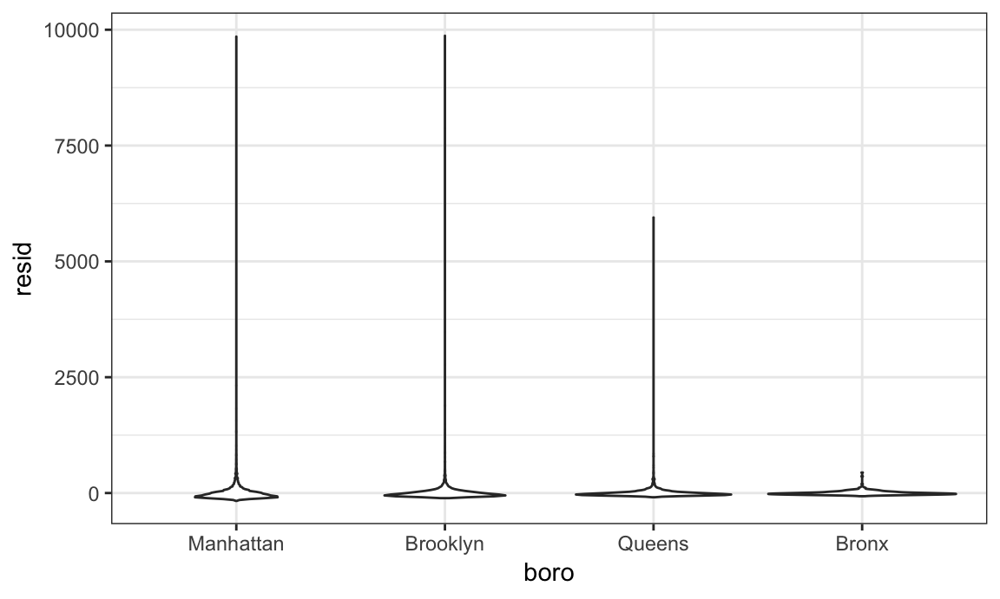
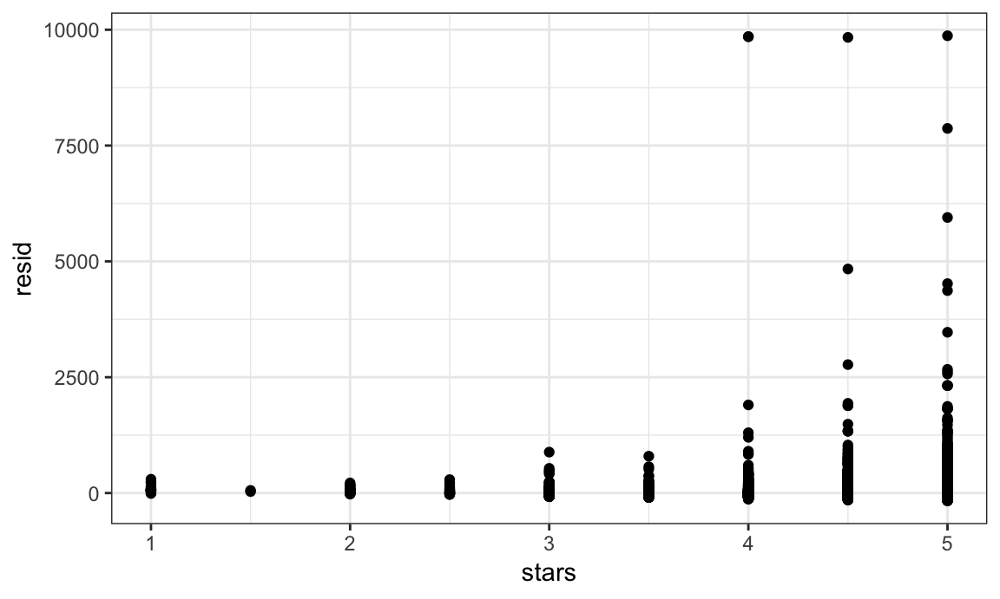
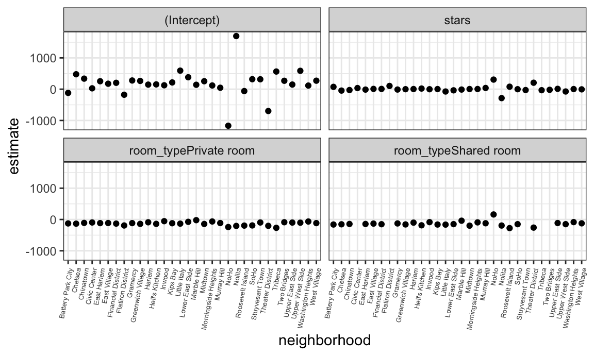

Linear regression models are fundamental in statistics and data science. When seeking to understand how covariates are associated with outcomes, linear models are among the first, best options. Although other regression approaches are possible, the flexibility and interpretability and of linear models make them essential.
This is the first module in the Linear Models topic; the relevant slack channel is here.
I’ll write code for today’s content in a new R Markdown document called linear_models.Rmd in a linear_models directory / repo. The code chunk below loads the usual packages and sets a seed for reproducibility.
library(tidyverse)
library(p8105.datasets)
set.seed(1)data("nyc_airbnb")
nyc_airbnb =
nyc_airbnb %>%
mutate(stars = review_scores_location / 2) %>%
rename(boro = neighbourhood_group,
neighborhood = neighbourhood) %>%
filter(boro != "Staten Island") %>%
select(price, stars, boro, neighborhood, room_type)fit = lm(price ~ stars + boro, data = nyc_airbnb)
summary(fit)
##
## Call:
## lm(formula = price ~ stars + boro, data = nyc_airbnb)
##
## Residuals:
## Min 1Q Median 3Q Max
## -169.8 -64.0 -29.0 20.2 9870.0
##
## Coefficients:
## Estimate Std. Error t value Pr(>|t|)
## (Intercept) -70.414 14.021 -5.022 5.14e-07 ***
## stars 31.990 2.527 12.657 < 2e-16 ***
## boroBrooklyn 40.500 8.559 4.732 2.23e-06 ***
## boroManhattan 90.254 8.567 10.534 < 2e-16 ***
## boroQueens 13.206 9.065 1.457 0.145
## ---
## Signif. codes: 0 '***' 0.001 '**' 0.01 '*' 0.05 '.' 0.1 ' ' 1
##
## Residual standard error: 181.5 on 30525 degrees of freedom
## (9962 observations deleted due to missingness)
## Multiple R-squared: 0.03423, Adjusted R-squared: 0.03411
## F-statistic: 270.5 on 4 and 30525 DF, p-value: < 2.2e-16nyc_airbnb =
nyc_airbnb %>%
mutate(boro = fct_infreq(boro),
room_type = fct_infreq(room_type))
fit = lm(price ~ stars + boro, data = nyc_airbnb)
summary(fit)
##
## Call:
## lm(formula = price ~ stars + boro, data = nyc_airbnb)
##
## Residuals:
## Min 1Q Median 3Q Max
## -169.8 -64.0 -29.0 20.2 9870.0
##
## Coefficients:
## Estimate Std. Error t value Pr(>|t|)
## (Intercept) 19.839 12.189 1.628 0.104
## stars 31.990 2.527 12.657 <2e-16 ***
## boroBrooklyn -49.754 2.235 -22.262 <2e-16 ***
## boroQueens -77.048 3.727 -20.675 <2e-16 ***
## boroBronx -90.254 8.567 -10.534 <2e-16 ***
## ---
## Signif. codes: 0 '***' 0.001 '**' 0.01 '*' 0.05 '.' 0.1 ' ' 1
##
## Residual standard error: 181.5 on 30525 degrees of freedom
## (9962 observations deleted due to missingness)
## Multiple R-squared: 0.03423, Adjusted R-squared: 0.03411
## F-statistic: 270.5 on 4 and 30525 DF, p-value: < 2.2e-16fit %>%
broom::glance()
## # A tibble: 1 x 11
## r.squared adj.r.squared sigma statistic p.value df logLik AIC
## * <dbl> <dbl> <dbl> <dbl> <dbl> <int> <dbl> <dbl>
## 1 0.0342 0.0341 182. 271. 6.73e-229 5 -2.02e5 4.04e5
## # ... with 3 more variables: BIC <dbl>, deviance <dbl>, df.residual <int>fit %>%
broom::tidy() %>%
select(term, estimate, p.value) %>%
mutate(term = str_replace(term, "^boro", "Boro: ")) %>%
knitr::kable(digits = 3)| term | estimate | p.value |
|---|---|---|
| (Intercept) | 19.839 | 0.104 |
| stars | 31.990 | 0.000 |
| Boro: Brooklyn | -49.754 | 0.000 |
| Boro: Queens | -77.048 | 0.000 |
| Boro: Bronx | -90.254 | 0.000 |
broom::tidy works with lots of things…
nyc_airbnb %>%
modelr::add_residuals(fit) %>%
modelr::add_predictions(fit)
## # A tibble: 40,492 x 7
## price stars boro neighborhood room_type resid pred
## <int> <dbl> <fct> <chr> <fct> <dbl> <dbl>
## 1 99 5 Bronx City Island Private room 9.47 89.5
## 2 200 NA Bronx City Island Private room NA NA
## 3 300 NA Bronx City Island Entire home/apt NA NA
## 4 125 5 Bronx City Island Entire home/apt 35.5 89.5
## 5 69 5 Bronx City Island Private room -20.5 89.5
## 6 125 5 Bronx City Island Entire home/apt 35.5 89.5
## 7 85 5 Bronx City Island Entire home/apt -4.53 89.5
## 8 39 4.5 Bronx Allerton Private room -34.5 73.5
## 9 95 5 Bronx Allerton Entire home/apt 5.47 89.5
## 10 125 4.5 Bronx Allerton Entire home/apt 51.5 73.5
## # ... with 40,482 more rowsnyc_airbnb %>%
modelr::add_residuals(fit) %>%
ggplot(aes(x = boro, y = resid)) + geom_violin()
## Warning: Removed 9962 rows containing non-finite values (stat_ydensity).
nyc_airbnb %>%
modelr::add_residuals(fit) %>%
ggplot(aes(x = stars, y = resid)) + geom_point()
## Warning: Removed 9962 rows containing missing values (geom_point).
Huge outliers / skewed distribution!! Should we exclude? Transform …? Use a “robust” regression???
For now I’m gonna ignore this, although it is definitely a problem.
Testing a single coef is pretty easy – it’s right there in the output.
Comparing nested models
fit_null = lm(price ~ stars + boro, data = nyc_airbnb)
fit_alt = lm(price ~ stars + boro + room_type, data = nyc_airbnb)
anova(fit_null, fit_alt) %>%
broom::tidy()
## Warning: Unknown or uninitialised column: 'term'.
## # A tibble: 2 x 6
## res.df rss df sumsq statistic p.value
## * <dbl> <dbl> <dbl> <dbl> <dbl> <dbl>
## 1 30525 1005601724. NA NA NA NA
## 2 30523 921447496. 2 84154228. 1394. 0This works for nested models only
(not nesting models – sorry)
This is confusing
nyc_airbnb %>%
lm(price ~ stars * boro + room_type * boro, data = .)
##
## Call:
## lm(formula = price ~ stars * boro + room_type * boro, data = .)
##
## Coefficients:
## (Intercept) stars
## 95.694 27.110
## boroBrooklyn boroQueens
## -26.066 -4.118
## boroBronx room_typePrivate room
## -5.627 -124.188
## room_typeShared room stars:boroBrooklyn
## -153.635 -6.139
## stars:boroQueens stars:boroBronx
## -17.455 -22.664
## boroBrooklyn:room_typePrivate room boroQueens:room_typePrivate room
## 31.965 54.933
## boroBronx:room_typePrivate room boroBrooklyn:room_typeShared room
## 71.273 47.797
## boroQueens:room_typeShared room boroBronx:room_typeShared room
## 58.662 83.089This is clearer
nest_lm_res =
nyc_airbnb %>%
group_by(boro) %>%
nest() %>%
mutate(models = map(data, ~lm(price ~ stars + room_type, data = .x)),
models = map(models, broom::tidy)) %>%
select(-data) %>%
unnest()
nest_lm_res %>%
select(boro, term, estimate) %>%
mutate(term = fct_inorder(term)) %>%
spread(key = term, value = estimate) %>%
knitr::kable(digits = 3)| boro | (Intercept) | stars | room_typePrivate room | room_typeShared room |
|---|---|---|---|---|
| Manhattan | 95.694 | 27.110 | -124.188 | -153.635 |
| Brooklyn | 69.627 | 20.971 | -92.223 | -105.839 |
| Queens | 91.575 | 9.654 | -69.255 | -94.973 |
| Bronx | 90.067 | 4.446 | -52.915 | -70.547 |
tradeoff: nesting gives you separate models, which is an easy-to-interpret way to examine effect modification in an exploratory way. But it doesn’t give a way to test.
Even more extreme:
manhattan_airbnb =
nyc_airbnb %>%
filter(boro == "Manhattan")
manhattan_airbnb %>%
count(neighborhood)
## # A tibble: 32 x 2
## neighborhood n
## <chr> <int>
## 1 Battery Park City 65
## 2 Chelsea 1072
## 3 Chinatown 360
## 4 Civic Center 42
## 5 East Harlem 1048
## 6 East Village 1858
## 7 Financial District 391
## 8 Flatiron District 90
## 9 Gramercy 307
## 10 Greenwich Village 383
## # ... with 22 more rows
manhattan_nest_lm_res =
manhattan_airbnb %>%
group_by(neighborhood) %>%
nest() %>%
mutate(models = map(data, ~lm(price ~ stars + room_type, data = .x)),
models = map(models, broom::tidy)) %>%
select(-data) %>%
unnest()
manhattan_nest_lm_res %>%
mutate(term = fct_inorder(term)) %>%
ggplot(aes(x = neighborhood, y = estimate)) +
geom_point() +
facet_wrap(~term, nrow = 2, ncol = 2) +
theme(axis.text.x = element_text(angle = 80, hjust = 1, size = 5))
Really the way to fit this is a mixed model – random intercepts and slopes for each neighborhood
manhattan_airbnb %>%
lme4::lmer(price ~ stars + room_type + (1 + room_type | neighborhood), data = .) %>%
broom::tidy()
## Warning in bind_rows_(x, .id): binding factor and character vector,
## coercing into character vector
## Warning in bind_rows_(x, .id): binding character and factor vector,
## coercing into character vector
## # A tibble: 11 x 5
## term estimate std.error statistic group
## <chr> <dbl> <dbl> <dbl> <chr>
## 1 (Intercept) 250. 26.6 9.41 fixed
## 2 stars -3.16 5.00 -0.631 fixed
## 3 room_typePrivate room -124. 7.80 -15.9 fixed
## 4 room_typeShared room -157. 12.9 -12.2 fixed
## 5 sd_(Intercept).neighborhood 59.3 NA NA neighbo…
## 6 sd_room_typePrivate room.neighbo… 36.7 NA NA neighbo…
## 7 sd_room_typeShared room.neighbor… 43.6 NA NA neighbo…
## 8 cor_(Intercept).room_typePrivate… -0.987 NA NA neighbo…
## 9 cor_(Intercept).room_typeShared … -1.000 NA NA neighbo…
## 10 cor_room_typePrivate room.room_t… 0.992 NA NA neighbo…
## 11 sd_Observation.Residual 198. NA NA ResidualLinear models are appropriate for outcomes that follow a continuous distribution, but binary outcomes are common. In these cases, logistic regression is a useful analytic framework.
The Washington Post has gathered data on homicides in 50 large U.S. cities and made the data available through aGitHub repository; the final CSV is here. You can read their accompanying article here. We’ll use data on unresolved murders in Baltimore, MD to illustrate logistic regression in R. The code below imports, cleans, and generally wrangles the data for analysis.
baltimore_df =
read_csv("data/homicide-data.csv") %>%
filter(city == "Baltimore") %>%
mutate(resolved = as.numeric(disposition == "Closed by arrest"),
victim_age = as.numeric(victim_age),
victim_race = fct_relevel(victim_race, "White"))
## Parsed with column specification:
## cols(
## uid = col_character(),
## reported_date = col_integer(),
## victim_last = col_character(),
## victim_first = col_character(),
## victim_race = col_character(),
## victim_age = col_character(),
## victim_sex = col_character(),
## city = col_character(),
## state = col_character(),
## lat = col_double(),
## lon = col_double(),
## disposition = col_character()
## )Using these data, we can fit a logistic regression for the binary “resolved” outcome and victim demographics as predictors. This uses the glm function with the family specified to account for the non-Gaussian outcome distribution.
fit_logistic =
baltimore_df %>%
glm(resolved ~ victim_age + victim_race + victim_sex, data = ., family = binomial()) Many of the same tools we used to work with lm fits can be used for glm fits. The table below summaries the coefficients from the model fit; because logistic model estimates are log odds ratios, we include a step to compute odds ratios as well.
fit_logistic %>%
broom::tidy() %>%
mutate(OR = exp(estimate)) %>%
select(term, log_OR = estimate, OR, p.value) %>%
knitr::kable(digits = 3)| term | log_OR | OR | p.value |
|---|---|---|---|
| (Intercept) | 1.190 | 3.287 | 0.000 |
| victim_age | -0.007 | 0.993 | 0.027 |
| victim_raceAsian | 0.296 | 1.345 | 0.653 |
| victim_raceBlack | -0.842 | 0.431 | 0.000 |
| victim_raceHispanic | -0.265 | 0.767 | 0.402 |
| victim_raceOther | -0.768 | 0.464 | 0.385 |
| victim_sexMale | -0.880 | 0.415 | 0.000 |
We can also compute fitted values; similarly to the estimates in the model summary, these are expressed as log odds and can be transformed to produce probabilities for each subject.
baltimore_df %>%
modelr::add_predictions(fit_logistic) %>%
mutate(fitted_prob = boot::inv.logit(pred))
## # A tibble: 2,827 x 15
## uid reported_date victim_last victim_first victim_race victim_age
## <chr> <int> <chr> <chr> <fct> <dbl>
## 1 Bal-… 20070101 NELSON LEON Black 17
## 2 Bal-… 20070102 GOLF EDDIE Black 26
## 3 Bal-… 20070105 MACKENNEY THOMAS JOSE… Black 21
## 4 Bal-… 20070105 CANUPP EDWARD LEE White 61
## 5 Bal-… 20070106 CUNNINGHAN MICHAEL Black 46
## 6 Bal-… 20070106 ALSTON RAY WILLIAM Black 27
## 7 Bal-… 20070107 HENDERSON YULE ANTONIO Black 21
## 8 Bal-… 20070108 MCDOWELL MARCU Black 16
## 9 Bal-… 20070108 GARDNER RODNEY THOM… Black 21
## 10 Bal-… 20070108 BURNETTE NELSENE Black 44
## # ... with 2,817 more rows, and 9 more variables: victim_sex <chr>,
## # city <chr>, state <chr>, lat <dbl>, lon <dbl>, disposition <chr>,
## # resolved <dbl>, pred <dbl>, fitted_prob <dbl>modelr package also has a websiteThe code that I produced working examples in lecture is here.